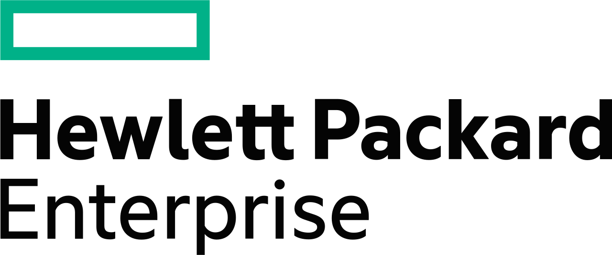
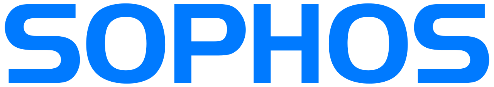

IT-Betreuung & Support
Persönliche Betreuung, Fernwartung und klare Supportprozesse halten Ihre IT im Tagesgeschäft zuverlässig verfügbar.
Persönliche Betreuung
Fernwartung
Rollout
GK-IT begleitet kleine und mittelständische Unternehmen mit verlässlicher IT-Betreuung, stabiler Infrastruktur, moderner Security und persönlicher Beratung.
Sie sind ein mittelständisches Unternehmen und suchen einen kompetenten IT-Dienstleister? GK-IT richtet IT so aus, dass sie zu Ihren Arbeitsabläufen passt und im Alltag spürbare Vorteile bringt.
GK-IT verbindet langjährige Erfahrung in IT-Support, Planung und Entwicklung mit modernen Technologien, namhaften Herstellern und einem klaren Fokus auf Sicherheit, Stabilität und Zukunftssicherheit.
Persönliche Betreuung, Fernwartung und klare Supportprozesse halten Ihre IT im Tagesgeschäft zuverlässig verfügbar.
Server, Clients, Dienste und Zugriffe werden sauber geplant, eingerichtet und dokumentiert - vom Windows-Server bis zum Rollout neuer IT-Infrastrukturen.
Firewall, Endpoint Security, Archivierung, Verschlüsselung und Backup schützen Systeme, Daten und Arbeitsfähigkeit.
Telefonie, Unified Communication, WiFi und Access-Lösungen verbinden Büro, Homeoffice und mobile Teams.
Cloud-Services ergänzen Ihre Infrastruktur dort, wo sie echten Nutzen bringen - mit Einrichtung, Backup und laufender Betreuung.
Webdesign, Hosting und Digitalisierungsberatung ergänzen Ihre IT um einen modernen Außenauftritt und effiziente Prozesse.
GK-IT arbeitet mit führenden Technologiepartnern, um IT-Infrastruktur, Security, Arbeitsplätze und Kommunikation für Unternehmen in der Region langfristig zuverlässig aufzubauen.


Jede IT-Umgebung ist anders. Deshalb arbeitet GK-IT nicht nach Schema F, sondern mit einem flexiblen Vorgehen, das Ihre vorhandenen Systeme, Ziele und Prioritäten berücksichtigt.
Wir schauen auf Arbeitsabläufe, vorhandene Systeme, Risiken und konkrete Anforderungen.
Sie erhalten klare, praxisnahe Vorschläge mit sinnvollen Prioritäten statt unnötiger Komplexität.
Neue Lösungen, Migrationen und Rollouts werden transparent geplant und sauber umgesetzt.
Auch nach der Umsetzung bleibt GK-IT ansprechbar für Support, Wartung, Weiterentwicklung und Beratung.
Erzählen Sie kurz, wobei GK-IT Sie unterstützen kann. Wir melden uns zeitnah mit einer persönlichen Einschätzung und den passenden nächsten Schritten.